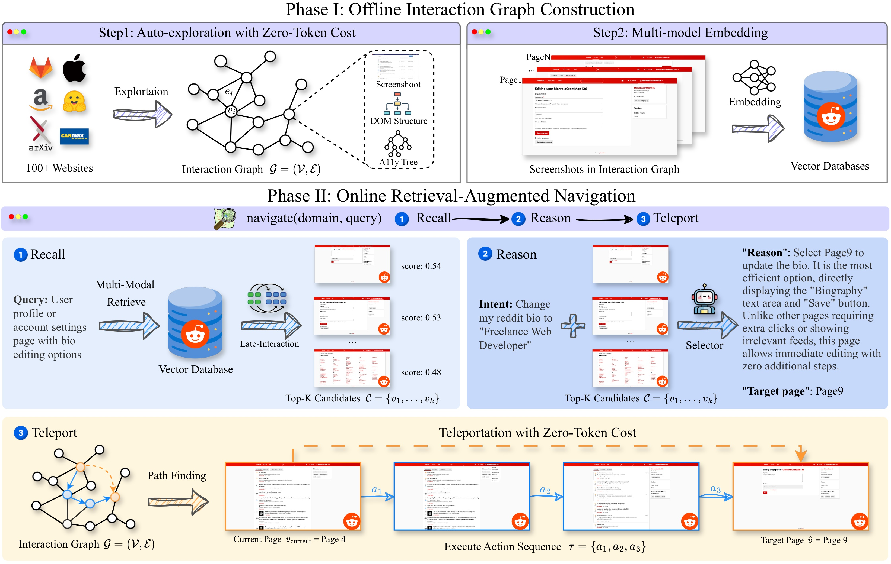
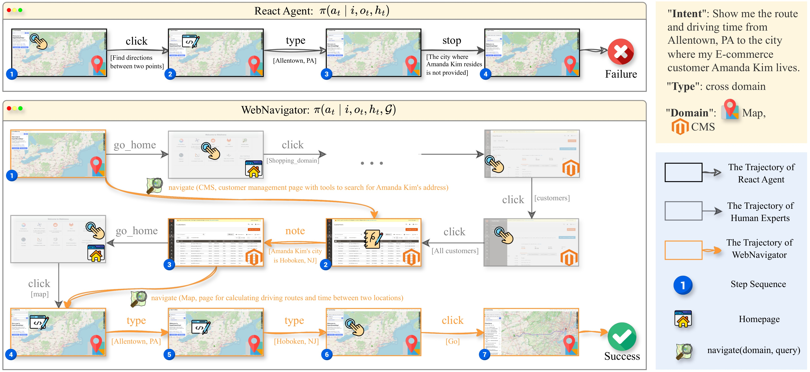
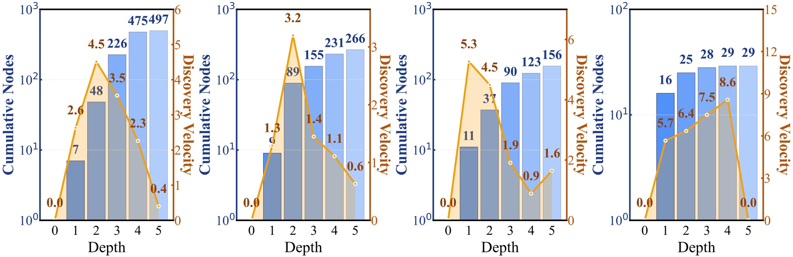

웹 에이전트는 왜 아직도 길을 잃는가
흐름: 현재 에이전트의 한계 진단 → Topological Blindness 개념 도입 → 기존 두 접근법의 한계 → WebNavigator 소개
GPT-4가 수학 증명과 코드 생성에서 인간을 뛰어넘었는데도, 웹 내비게이션 성공률은 여전히 인간에 한참 못 미친다. 논문은 이 격차의 원인을 모델의 추론 능력 부족으로 보지 않는다.
"We argue that this limitation stems from Topological Blindness rather than simply insufficient model reasoning."
Topological Blindness란
현재 웹 에이전트는 의사결정 시 {현재 관찰, 히스토리, LLM 내부 지식}만 참조한다. 웹사이트 전체 구조가 어떻게 생겼는지 — 어떤 페이지들이 존재하고, 어떤 행동이 어떤 페이지로 연결되는지 — 를 모르는 채로 탐색하는 것이다.
인간 전문가라면 웹사이트의 '지도'를 머릿속에 갖고 있다. 에이전트는 그 지도가 없다. 그 결과:
- 불안정한 계획: 전체 구조를 모르니 엉뚱한 경로를 선택
- 시행착오 비용: 맞는 페이지를 찾을 때까지 무한 탐색
- 조기 종료: 길을 못 찾으면 그냥 포기
기존 접근법의 한계
Topological Blindness를 해결하려는 시도는 두 계열이 있었지만 둘 다 근본적 한계가 있다.
Paradigm 1 — 온라인 탐색 기반 (Tree Search 계열) 추론 중에 look-ahead 탐색으로 더 넓은 관찰을 확보하려 한다. 문제는 매 태스크마다 처음부터 탐색을 다시 해야 해서 — "reinventing the wheel for every new task" — 비용이 크고, 그 지식은 태스크가 끝나면 버려진다.
Paradigm 2 — 학습된 내부 지식 (World Model 계열) WMA 같은 방법이 여기 해당된다. 모델이 환경 동역학을 내부에 담으려 하지만, 파라미터 지식은 사이트별 세부사항을 담기에 너무 희소하고, 월드 모델은 새 사이트에서의 일반화에 실패하며 오류가 누적된다.
두 패러다임의 공통 문제: 모두 전역 환경 정보 없이 결정을 내린다.
WebNavigator: 탐색을 검색으로 바꾸다
흐름: 핵심 아이디어 → Phase I (오프라인 그래프 구축) → Phase II (온라인 검색 기반 내비게이션) → 에이전트 설계
핵심 아이디어
웹 내비게이션을 "확률적 탐색"이 아니라 "결정론적 검색 + 경로탐색"으로 재정의한다.
사전에 웹사이트를 탐색해 Interaction Graph를 만들어 두고, 실제 태스크 수행 시에는 그래프에서 목적지를 검색해 최단 경로로 텔레포트한다. LLM이 "어디로 갈지"만 말하면, 나머지는 그래프가 결정론적으로 처리한다.

Phase I — 오프라인 Interaction Graph 구축
Interaction Graph G = (V, E)의 정의:
- 노드
v ∈ V: 고유한 페이지 관찰 (스크린샷 + DOM tree + accessibility tree) - 엣지
e = (v, a, v') ∈ E: 노드v에서 행동a를 취하면v'로 전이
이 그래프를 어떻게 만드나? Heuristic Auto-Exploration Engine — BFS 기반 탐색 엔진이 홈페이지 URL 하나만 받아서 자동으로 그래프를 구축한다.
단순 BFS의 문제는 웹 인터랙션이 대부분 부분적인 변화만 만든다는 점이다. 부모 페이지와 자식 페이지의 요소 대부분이 동일하다. 그래서 Adaptive BFS를 설계했다:
- 각 노드를 DOM tree + URL의 해시로 유일하게 식별:
id_v = MD5(H_v || url_v) - 부모 노드와 자식 노드의 구조 해시 집합 차이를 계산:
ΔH_v = H_v \ H_v_parent - 새로 등장한 요소(
ΔH_v)에서만 인터랙티브 엘리먼트를 추출해 탐색
이렇게 탐색이 끝난 모든 노드는 스크린샷을 멀티모달 임베딩으로 변환해 벡터 DB에 인덱싱한다.
Phase II — 온라인 Retrieve-Reason-Teleport
태스크가 주어지면 세 단계로 목적지 페이지로 이동한다.
① Retrieve — 후보 검색
에이전트가 내비게이션 의도(intent)를 바탕으로 쿼리 q를 작성한다. 예: "Edit product X's price to $50" → query: "page to edit product information"
이 쿼리를 멀티벡터 임베딩으로 변환해 DB에서 top-k 후보 페이지를 검색한다. 검색 방식은 Late Interaction — 쿼리 토큰과 스크린샷 토큰 사이의 fine-grained 매칭:
s(q, v_j) = (1/n) Σ_i max_ℓ (q_i · v_j,ℓ)
단일 벡터 압축이 아니라 토큰 수준 유사도를 계산해, "특정 버튼", "특정 입력 필드" 같은 세밀한 시각 정보까지 포착한다.
② Reason — 최적 후보 선택
top-k 후보 스크린샷들을 멀티모달 LLM에 넘겨 의도에 맞는 최적 페이지 v*를 고른다. 탐색(generation)이 아니라 검증(verification) 문제로 단순화한 것이 핵심이다.
③ Teleport — 최단 경로 실행
v*가 결정되면, Interaction Graph에서 현재 위치 → v*의 최단 경로를 계산해 자동 실행한다. 역시 zero-token cost.
에이전트 관점에서 이 전체 워크플로우는 단 하나의 액션으로 추상화된다: navigate(domain, query)
에이전트 설계 — 6개 액션으로 충분하다
WebNavigator는 비교 대상 중 가장 컴팩트한 액션 공간 — 총 6개 액션만 사용한다.
navigate(domain, query) 하나가 크로스도메인 계획, 탭 관리, 경로탐색을 모두 흡수한다. 나머지 5개는 로컬 실행 액션(클릭, 입력 등)이다. 기존 방법들이 tab_focus, new_tab, tab_close를 별도 액션으로 갖거나 사이트별 전용 액션(GitLab용 find_commits 등)을 하드코딩하는 것과 대비된다.

실험 결과
흐름: WebArena 메인 결과 → 멀티사이트 성능 → Online-Mind2Web → 도메인별 분석
WebArena — 새 SOTA
| 방법 | Paradigm | WebArena SR |
|---|---|---|
| WebPilot | 온라인 탐색 | 37.2% |
| Plan-and-Act | 내부 지식 | 45.7% |
| WebNavigator (GPT-4o) | 그래프 검색 | 49.9% |
| WebNavigator (Claude-Sonnet-4) | 그래프 검색 | 57.1% |
| WebNavigator (Gemini-2.5-Pro) | 그래프 검색 | 63.3% |
멀티사이트 태스크에서 성과가 특히 두드러진다. GPT-4o와 Claude-Sonnet-4 기준 50.0% — 이전 SOTA AgentOccam(25.0%) 대비 2배. Gemini-2.5-Pro로는 72.9%, 엔터프라이즈급 에이전트 CUGA의 2배 이상이다.
Online-Mind2Web — 136개 실제 웹사이트
Gemini-2.5-Pro 기준 52.7%, GPT-4o 기준 41.3%로 SOTA 달성. WebArena(5개 사이트)가 아닌 136개 다양한 실제 웹사이트에서도 일반화가 된다는 점에서 의미가 크다.
왜 도메인마다 향상 폭이 다른가
Topological Blindness의 심각도가 도메인마다 다르다.
- Reddit: 포럼이 90개 이상인 넓고 얕은 구조. 전체 포럼 목록 없이는 맞는 포럼을 찾을 확률이 낮음 → Interaction Graph 효과 극대화
- Shopping, CMS, GitLab: 깊고 복잡한 구조. 관련 페이지가 표면 뒤에 숨어 있어 에이전트가 쉽게 함정에 빠짐 → 큰 향상
- Map: 노드 수 16개에 불과한 매우 단순한 위상 → Topological Blindness가 거의 없어 모델 간 성능 차이 없음
웹 위상의 실제 구조 분석
흐름: Topological Skeleton 가설 → Discovery Velocity 분석 → 시사점
"Prior research characterizes web environments as effectively infinite observation spaces. In contrast, we hypothesize that individual websites possess compact topological skeletons."
논문은 웹사이트의 기능적 구조(Topological Skeleton)가 실제로 얼마나 compact한지 탐색 깊이에 따른 Discovery Velocity로 분석한다.

논문 정의: V_d = (N_d - N_{d-1}) / (T_d - T_{d-1}) — 깊이 d를 탐색하는 데 걸린 시간 동안 새로 발견된 노드 수(노드/분).
단순히 "깊이 d에서 새로 발견된 노드 수"가 아니라 시간으로 나눈 이유가 있다. 깊이가 깊어질수록 그 노드에 도달하는 것 자체가 오래 걸린다 — 루트부터 경로를 다시 실행해야 하기 때문이다. 시간으로 나눔으로써 탐색 비용 대비 새 정보 획득 효율을 본다. velocity가 급감하는 지점이 "그 이상 탐색은 비효율적"이라는 신호이고, 이것이 논문에서 탐색 깊이를 2~3으로 설정한 근거다.
"수렴"이 아니라 완전 탐색 종료다. Discovery Velocity는 단위 시간당 새로 발견된 노드 수인데, 깊이 5에서 0이 됐다는 건 그 시점에 발견할 노드가 하나도 남지 않았다는 뜻이다. Map은 노드가 29개뿐인 작은 구조라 깊이 4 이하에서 이미 전부 탐색이 끝났고, 깊이 5는 더 이상 새로운 것이 없는 상태다. 점점 줄어들다 0에 가까워지는 "수렴"이 아니라, 탐색할 공간 자체가 소진된 것이다.
결론: 이론적으로 무한해 보이는 웹사이트도, 기능적 골격은 컴팩트하다. 태스크 관련 페이지들은 얕은 깊이에 집중되어 있고, 탐색 깊이 2~3 정도면 대부분의 태스크를 커버할 수 있다.
심층 분석
흐름: Knowledge Completeness → Information Bandwidth → Task Simplification → Retrieval Granularity
지식 완전성 (탐색 깊이)
Reddit 도메인에서 탐색 깊이를 1~4로 변화시킨 실험:
| 탐색 깊이 | 성공률 |
|---|---|
| depth 1 | 63.2% |
| depth 2 | 70.8% |
| depth 3 | 73.6% |
| depth 4 | 75.5% |
깊이 1→2 구간에서 급상승 후 수렴. 지식 완전성이 성능의 일차 결정 요인임을 확인.
Task Simplification — 작은 모델로도 충분
Selector를 8B 모델(Qwen3-VL-8B)로 써도 GPT-4o, Gemini-2.5-Flash와 동등한 75.5% 달성.
"This consistency across model scales confirms that WebNavigator successfully offloads navigation complexity from model reasoning to structured knowledge retrieval."
내비게이션 복잡도를 그래프가 흡수하기 때문에, LLM이 할 일은 top-k 후보 중 하나를 고르는 verification 문제로 단순화된다.
Retrieval Granularity — Late Interaction의 중요성
| 검색 방식 | 성공률 |
|---|---|
| Dense embedding | 66~67% |
| Late Interaction (ours) | 73.6% |
웹 내비게이션은 "특정 버튼", "특정 폼 필드"를 정확히 찾아야 하는 fine-grained 문제다. 전체 스크린샷을 단일 벡터로 압축하면 이런 세밀한 공간 정보가 사라진다. 토큰 수준 매칭이 필수적이다.
정리
WebNavigator는 "모델이 더 잘 추론하게 만들자"는 방향이 아니라, "에이전트에게 지도를 줘서 탐색 문제 자체를 없애자"는 방향을 택한다.
핵심 기여:
- Topological Blindness: 웹 에이전트의 실패 원인을 새 개념으로 명확히 진단
- Zero-token cost 오프라인 탐색: LLM 없이 Interaction Graph를 구축해 재사용 가능한 지식으로 저장
- Retrieve-Reason-Teleport: 내비게이션을 검색 문제로 전환 — 모델 규모와 무관하게 작동
- WebArena 멀티사이트 72.9%: 기존 SOTA 대비 2배 이상, 기업급 에이전트도 뛰어넘음
남은 과제는 동적으로 변하는 웹사이트(콘텐츠가 수시로 바뀌는 뉴스 사이트, 이커머스 등)에서 그래프를 얼마나 최신 상태로 유지할 수 있는가, 그리고 로그인이 필요한 인증 환경으로의 확장이다.